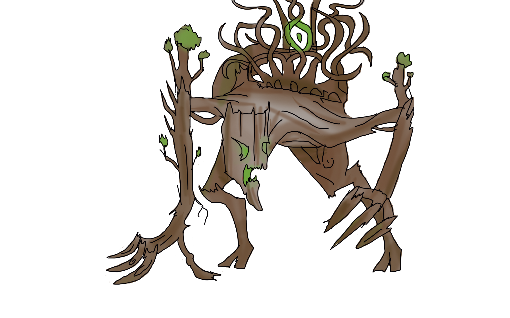

HISTORIA
Arturo se ve rechazado por la mayoría de los chicos del colegio al ser considerado un“friki”, su día a día se ve intimidado por un grupo que disfruta abusar de él, sin embargo poco puede hacer para defenderse, por lo que continúa su vida intentando soportarlo. Sin embargo algo sucede con Arturo, un asunto que el ignora por completo y que lo vuelve alguien muy especial; su familia posee un gen rextraño que despierta únicamente tras vivir un acontecimiento importante o traumático.

Al llegar a su hogar, Arturo se dirige a saludar a quién considera su compañía más preciada, una pequeña planta, la única que parece responder y entender sus problemas, ya que él desde siempre ha tenido una fuerte conexión con la naturaleza.
Un día mientras regresa de la tienda de Comics, Arturo observa como los chicos que lo molestan hacen una fogata en el bosque quemando varias ramas y troncos mientras beben y ríen. Arturo molesto, quiere acercarse para defender la naturaleza, sin embargo se detiene ya que sabe que
Al día siguiente, Arturo vuelve para limpiar el desastre que ocasionaron en el bosque, sintiéndose terrible por los arboles cuyas ramas fueron incineradas hasta volverse ceniza. Al llegar a su casa de nuevo, Arturo ve en las noticias que algunas personas han estado cazando animales en las zonas cercanas, convencido de que se trata de los chicos que suelen molestarlo a él, se llena de rabia y sale de su casa deseando hacer algo al respecto, sin embargo esto hace que su gen se active y cambia algo dentro de él; Arturo se transforma en un ser parecido a un árbol. Unos policías que rondaban en el lugar para evitar que se siguieran cazando animales encuentran a Arturo, al ver su extraña forma lo atacan, sin embargo Arturo logra asesinarlos, desapareciendo luego en el bosque.
Al otro día, después de encontrar el cuerpo de los hombres el gobierno decide encubrir el hecho y se anuncia en las noticias este suceso atribuyendo el caso a un ataque de un animal salvaje. Los chicos que molestan a Arturo se enteran de esto y deciden ir por el animal para obtener prestigio y dinero. Sin embargo al llegar al bosque en su búsqueda, Arturo aún con el objetivo de acabar con ellos les tiende una trampa, separándolos mientras se mezcla con el bosque para luego asesinarlos.
Estando en paz por obtener su venganza, Arturo va a su casa, y desde afuera con sus ramas toma a su pequeña planta para luego desaparecer en el bosque, donde espera para proteger y atacar a quien quiera dañar su preciada naturaleza.